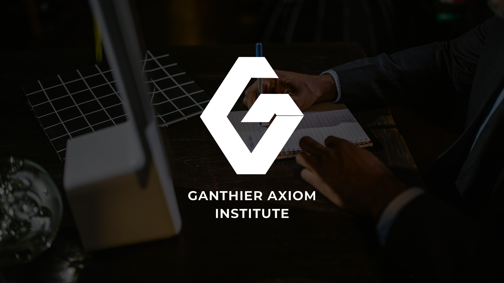

Our Mission
The mission of Ganthier Academy is to present academic learning through structure, clarity, and practical intellectual development.

Ganthier Academy is built for audiences who expect more than a simple website. It is positioned as an academic environment where structure, trust, and thoughtful educational communication come together. The academy-style identity uses bright color, scholarly accents, and rich written content to create a professional presence suitable for students, families, educators, and learning-focused communities.
At its core, Ganthier Academy values learners who can read carefully, ask better questions, organize information, connect ideas across disciplines, and express their understanding with clarity.

A strong academy needs a clear reason to exist. Ganthier Academy supports learning through clarity and helps students become more adaptable, thoughtful, and confident.
The mission of Ganthier Academy is to present academic learning through structure, clarity, and practical intellectual development.
The vision of Ganthier Academy is to become a recognizable academic platform associated with thoughtful education and global awareness.
Ganthier Academy promises a website experience that feels complete, polished, and meaningful for visitors.
The standard of Ganthier Academy is consistency across navigation, typography, FAQ answers, article pages, and academic tone.
Ganthier Academy is supported by values that influence how the website speaks, how content is organized, and how visitors understand the academy’s educational direction.
Ganthier Academy believes strong learning begins with clear foundations, academic language, and purpose.
Ganthier Academy presents discipline as a positive habit through routines, careful reading, and feedback.
Academic knowledge becomes more useful when students connect it to society, technology, communication, and decisions.
Ganthier Academy values reflection because meaningful progress depends on awareness and review.
Ganthier Academy treats communication as an essential academic ability for writing, listening, and explaining.
Ganthier Academy recognizes that modern learners operate in a connected world that rewards maturity and perspective.
A meaningful academic experience requires more than content delivery. Ganthier Academy is built around structure, context, feedback, and reflection so students can develop lasting confidence instead of short-term memorization.
Students need stable reference points before they can analyze complex questions.
Learners ask thoughtful questions and treat curiosity as a disciplined part of education.
Confidence grows through repeated engagement, meaningful exercises, and clear feedback.
Education becomes more meaningful when learners feel supported by a larger academic environment.

Read the Insights section for long-form articles, review the FAQ, or contact the academy through official channels.